| Nombre | Posición | Edad | Bibliografía | Portada |
|---|---|---|---|---|
| Bruno Petković | Delantero | 28 |
Delantero de Dinamo Zagreb, conocido por su capacidad de remate y juego aéreo. Figura importante en la selección croata. |
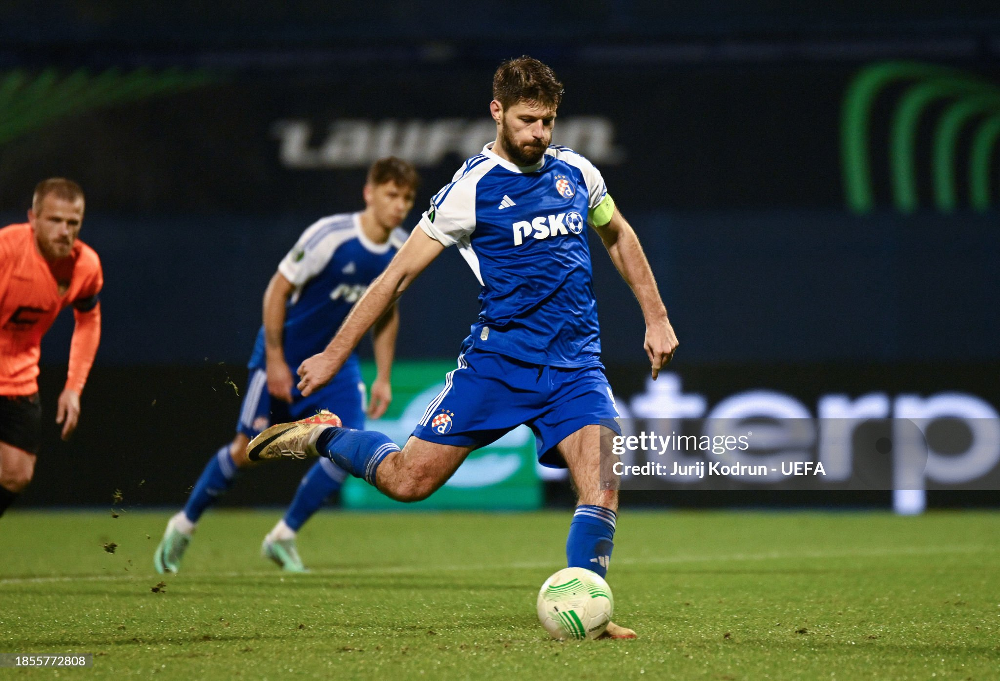 |
| Borna Sosa | Lateral izquierdo | 25 |
Lateral del Aston Villa, destacado por su rapidez y capacidad ofensiva en la banda izquierda. |
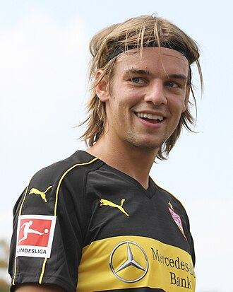 |
| Ante Budimir | Delantero | 31 |
Delantero del Osasuna, versátil en ataque y con gran olfato goleador, ha sido parte de la selección en torneos recientes. |
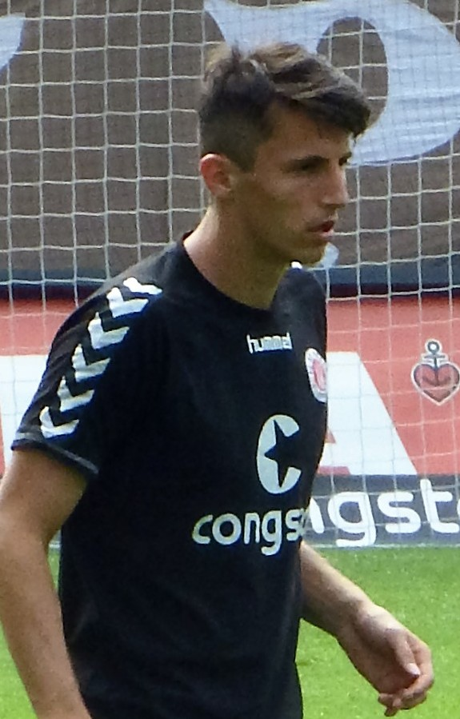 |
| Nikola Vlašić | Centrocampista | 25 |
Mediocampista del Torino, creativo y con gran llegada al área rival. Figura clave en el mediocampo croata. |
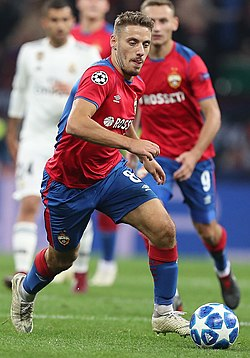 |
| Lovro Majer | Centrocampista ofensivo | 25 |
Centrocampista de VfL Wolfsburg, con visión de juego y capacidad para generar oportunidades de gol. |
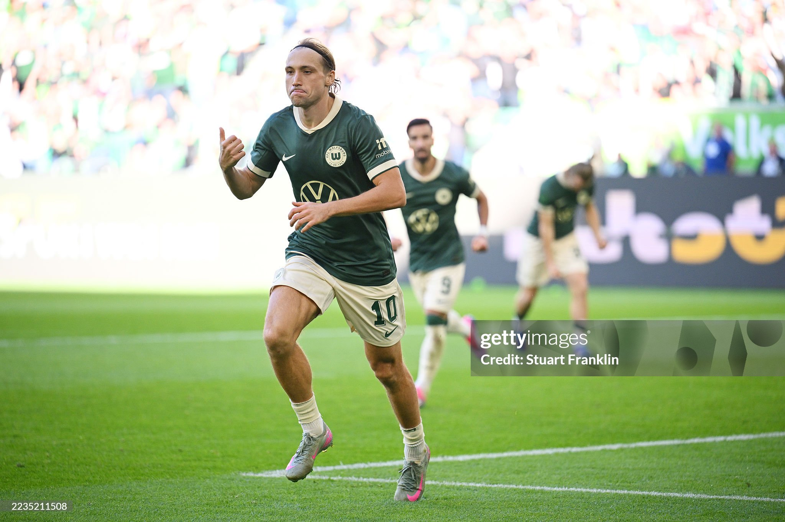 |
| Joško Gvardiol | Defensa central | 21 |
Defensor central del Manchester City, joven promesa de Croacia, fuerte en duelos y con proyección ofensiva. |
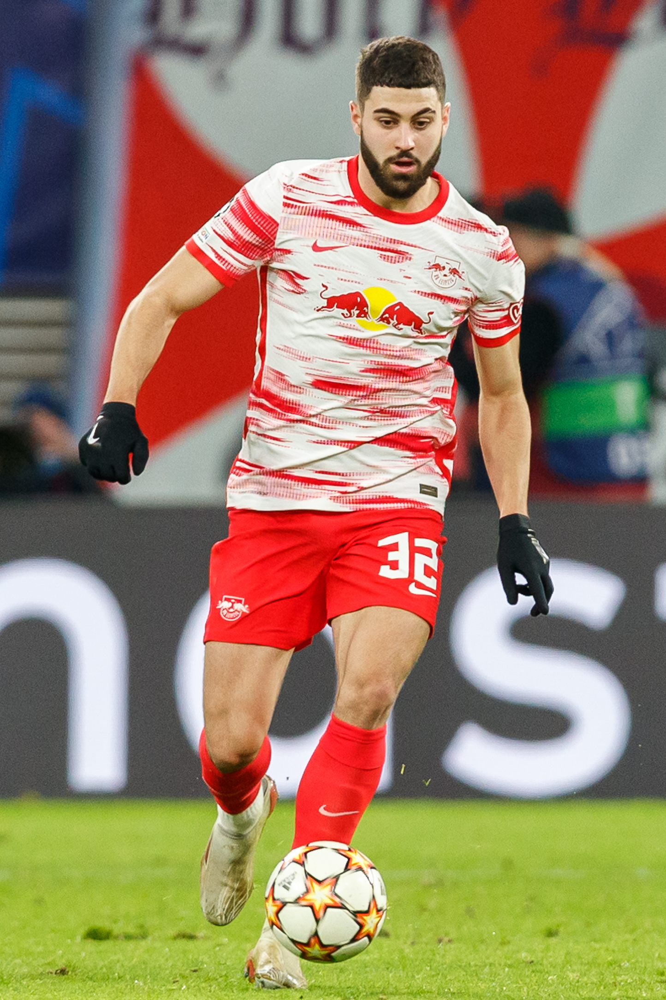 |
| Josip Juranović | Lateral derecho | 27 |
Lateral del Union Berlin, rápido y ofensivo, aporta equilibrio entre defensa y ataque en la selección. |
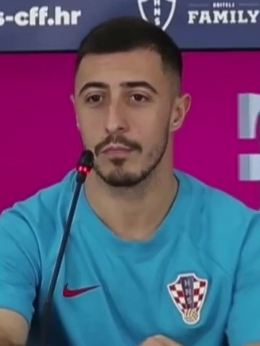 |
| Mario Pašalić | Centrocampista | 29 |
Centrocampista del Atalanta, con gran resistencia y llegada al área, importante en el equilibrio del mediocampo. |
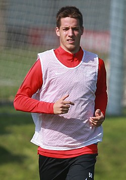 |
| Ivan Perišić | Extremo | 35 |
Extremo del PSV Eindhoven, experimentado y decisivo, aporta velocidad y experiencia en ataque. |
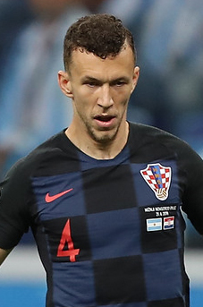 |
| Andrej Kramarić | Delantero | 32 |
Delantero del Hoffenheim, goleador histórico del club, hábil en el área y con gran definición. |
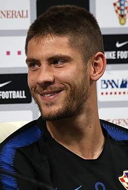 |
| Mateo Kovačić | Centrocampista defensivo | 28 |
Centrocampista del Manchester City, equilibrado en defensa y ataque, clave en la transición del equipo. |
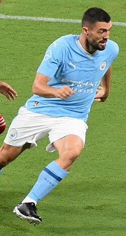 |
| Luka Modrić | Centrocampista | 38 |
Centrocampista del AC Milan, capitán de Croacia y ganador del Balón de Oro, símbolo de liderazgo y técnica. |
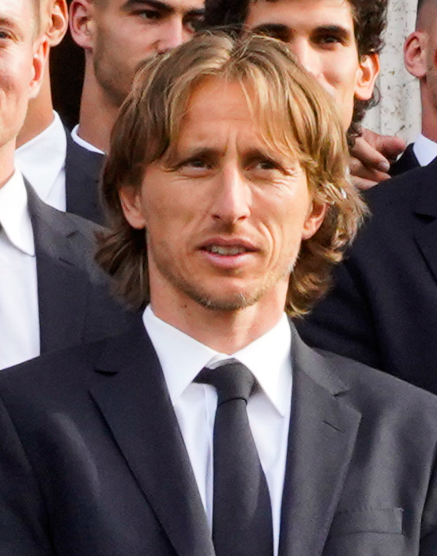 |